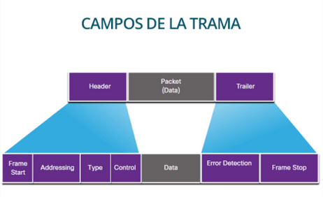
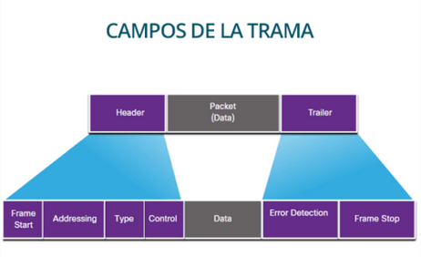

Todas las redes tienen en común 4 elementos básicos:
- Reglas o acuerdos,
- Mensajes,
- Medios
- Dispositivos.

Todas las redes tienen en común 4 elementos básicos:

| Son los protocolos que se aplican en la red de comunicación. Regulan todos los aspectos de la comunicación. Actualmente es TCP/IP el más utilizado en las comunicaciones debido al uso de internet. |  |
Mensajes: Los datos que circula a través de la red. Pueden ser vídeos, música, texto, voz,etc…
Dispositivos: son los que trabajan para que el mensaje sea dirigido adecuadamente desde el origen al destino. Pueden ser:
Finales: son los que interactúan directamente con el ser humano: computadoras, impresoras, dispositivos móviles, etc.
Intermediarios: proporcionan conectividad entre redes y administran los flujos de datos por la red. Se clasifican a su vez en:
De acceso a la red: hub, switches y puntos de acceso inalámbrico.
De internetworking: router.
De comunicación: módem.
De seguridad: firewalls.
Los medios de red o medios de transmisión son el soporte físico mediante el que los dispositivos pueden comunicarse en una red de datos. Podemos distinguir dos tipos de medios y, en cualquiera de los dos, la transmisión se realiza por medio de ondas electromagnéticas.
Los medios guiados conducen o guían las ondas a través de un camino físico, ejemplos de estos medios son el cable coaxial, la fibra óptica y el cable par trenzado.
Los medios no guiados proporcionan un soporte para que las ondas se transmitan, pero no las dirigen; como ejemplo de ellos tenemos el aire y el vacío.
La naturaleza del medio junto con la de la señal que se transmite a través de él constituyen los factores determinantes de las características y la calidad de la transmisión.
Obra publicada con Licencia Creative Commons Reconocimiento Compartir igual 4.0